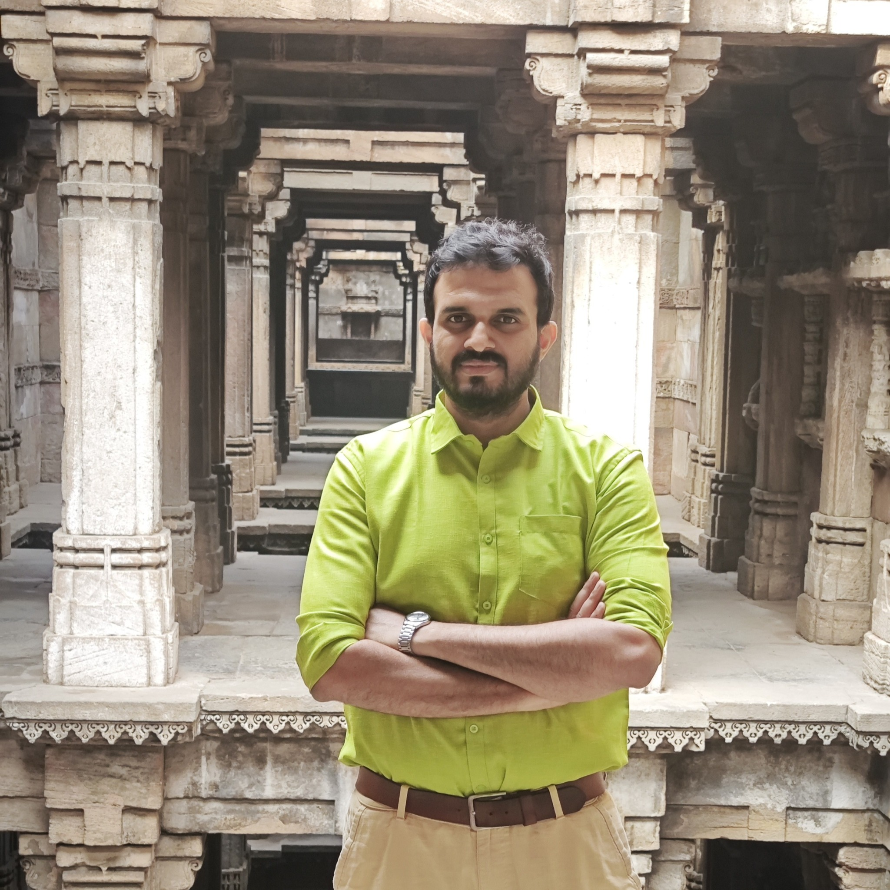

4+ years building and improving B2C products across engagement, retention, experimentation, and product strategy. Currently at Chimple Learning, working across student and teacher experiences, growth systems, and product analytics.
Inactive learners were falling out of the funnel with no structured way back in. I architected a WhatsApp-based re-engagement pipeline and ran controlled experiments on nudge timing, message type, and logic to find what actually brought parents and students back.
→ 2.4x reactivation lift · 269 recovered users, up from a baseline of 25The Teacher's App dashboard was purely score-based, disconnected from what actually predicted long-term learning. I redesigned it around engagement — surfacing the metrics that mapped to our North Star of 60 minutes of weekly student engagement, not just test scores.
→ Realigned core product surface to the org's North Star MetricOwning engagement and retention across the student and teacher experience — WhatsApp growth systems, gamification, and product analytics.
Led curriculum-product initiatives grounded in user research and data — 25% lift in course completion, 20% lift in engagement from persona-driven redesigns.
Founding product team member; defined vision and roadmap for an AI-powered HRMS and recruitment tool from 0 to 1.
Shipped an Attendance Management Portal and a Decision Management System, cutting handling time by 30%.
Progressed from content development to product roles across ed-tech platforms — building curriculum content, growing a YouTube channel from 10K to 50K subscribers, and leading a team that lifted student retention by 35%.
Product Manager positions at B2C companies in the 10-to-100 growth stage — proven product-market fit, now scaling engagement and retention. Open across industries, not limited to ed-tech.
Open to short-term or advisory engagements on engagement, retention, and WhatsApp-native growth for teams that already have a product and need help keeping users coming back.

I'm Bharath, a Product Manager who enjoys working on problems where product thinking, user experience, data, and execution come together.
Over the last 4+ years, I've worked on B2C products across engagement, retention, experimentation, and product strategy. At Chimple Learning, that means working across student and teacher experiences, growth systems, and product analytics.
I enjoy taking an unclear problem, understanding what is really happening, and turning it into something a team can build, measure, and improve.